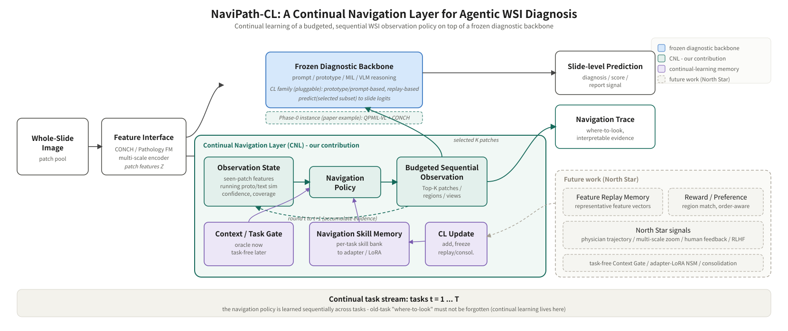
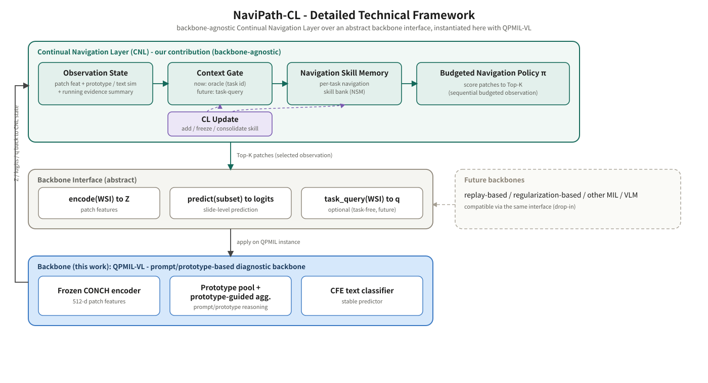

通用、backbone-agnostic 的導覽層：在 frozen 診斷 backbone 之上，做 budgeted、序列、可持續學習的 WSI 觀察。QPMIL-VL 只是 Phase-0 的一個 backbone 實例。
藍＝frozen backbone；綠＝CNL（我們的貢獻）；紫＝CL 記憶；虛線＝future work。

site/figs/arch_navipath_cl.svg（vector，可轉 PDF）。三層：CNL（我們的貢獻）→ Backbone Interface（抽象介面）→ QPMIL-VL（本次 instance）；future backbone 經同一介面 drop-in。來源：STORYLINE.md §6。

site/figs/arch_navipath_cl_detail.svg。有限 budget 下，依累積證據多步決定「下一步看哪」，輸出可解釋 Navigation Trace。
面對任務流，navigation 技能被累積 / 路由 / 更新；舊任務「該看哪」不退化。
| 圖中模組 | 目前對應 | Phase 1（7/20） |
|---|---|---|
| Feature Interface | precomputed CONCH features | 做 |
| Frozen Diagnostic Backbone | QPMIL-VL（一個 instance） | 做（凍結） |
| Observation State | 累積證據狀態 | 做 |
| Navigation Policy | 原 router，升級為序列 policy | 做 |
| Budgeted Sequential Observation | 多步 Top-K 觀察 | 做（新肉） |
| Navigation Skill Memory (NSM) | per-task skill bank | 做 |
| Context / Task Gate | oracle | 做 · task-free future |
| CL Update | add / freeze | 做 · replay/consol future |
| Navigation Trace | where-to-look 輸出 | 做 |
| Feature Replay Memory | — | future |
| Reward / Preference Model | — | future |
| North Star signals（軌跡/zoom/RLHF） | — | future |
「通用 module」＝我們的貢獻本體（CNL）。它的通用性由介面契約界定：backbone 可換，但要滿足我們 module 需要的 input。版本化記錄見 docs/wiki/05。
| backbone 必須提供 | 為什麼我們需要 |
|---|---|
R1 per-patch features encode(WSI)→Z | State/Policy 以 patch 為決策單位，不能只給單一 slide embedding |
R2 subset-defined prediction predict(S)→logits（permutation-invariant） | 我們做 budgeted 子集觀察；預測必須對任意子集穩定 |
| R3 per-patch relevance / confidence 訊號 | 供 Observation State 累積證據、驅動序列決策 |
O1 task_query(WSI)→q（optional） | task-free Context Gate（future） |